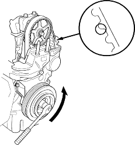
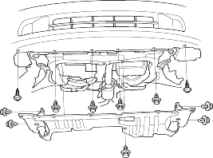

- Remove the ignition coil cover, then remove the four ignition coils.
- Remove the throttle cable clamps and harness holder mounting bolts.
- Remove the cylinder head cover.
- Inspect the timing belt for cracks and oil or coolant soaking. Replace the belt if it is oil or coolant soaked. Remove any oil or solvent that gets on the belt.

- After inspecting, retorque the crankshaft pulley bolt (see page 6-17).
Special Tools Required
- Socket, 19 mm, 07JAA-001020A
- Handle, 07JAB-0010200
- Pulley holder attachment, HEX 50 mm, 07JAB-0010400
- Pulley holder attachment, HEX 50 mm, 07MAB-PY30100
- Make sure you have the anti-theft code for the radio, then write down the frequencies for the radio's preset buttons.
- Disconnect the battery negative terminal.
- Turn the crankshaft pulley so its TDC mark (A) lines up with the pointers (B).

- Remove the front tyres/wheels.
- Remove the splash shield.
